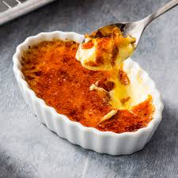

Eggnog Creme Brulee
A delicious classic holiday custard, with an original twist of bourbon, nutmeg and eggnog.

Ingredients
- 8 large egg yokes
- 1/2 cup granulated sugar
- 1/2 cup additional granulated sugar (for sprinkling)
- 3/4 teaspoon freshly grated nutmeg
- 1/2 teaspoon salt
- 2 cups heavy cream
- 1 cup whole milk
- 1 tablespoon bourbon
Steps
- Preheat oven to 325 degrees Farenheit
- Put 8 shallow, 4 ounce creme brulee dishes in a large roasting pan
- Bring a kettle of water to a boil
- In a large bowl, whisk together egg yolks, 1/2 cup granulated sugar, nutmeg and salt. Whisk in heavy cream, milk, and bourbon
- Divide mixture carefully among creme brulee dishes
- Transfer roasting pan to the oven
- Carefully pour the boiling water into the roasting pan to come halfway up the sides of the creme brulee dishes
- Bake until the edges of the custard are set, but jiggle in the center, 25-30 minutes, taking care to not overcook
- With a spatula or tongs, carefully transfer the dishes to a rack to cool completely
-
- Cover with plastic wrap and refrigerate for at least 2 hours, up to 2 days
- Just before serving, remove the plastic wrap and sprinkle one of the custards evently with 2-3 teaspoons sugar
- Pass a kitchen torch over the surface until the sugar melts and turns a deep golden brown
- Repeat with the remaining custards
- Allow the sugar to cool for a few minutes before serving
Home